Signs: WarnTriangle
88 items: Drawn 81, Placeholder 2, Unverified source 5
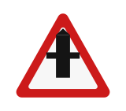
504.1CrossroadsDrawn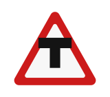
505.1T-junction aheadDrawn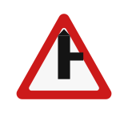
506.1Side road aheadDrawn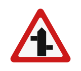
507.1Staggered junctionDrawn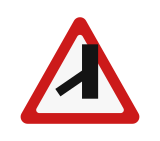
508.1Traffic merging from the leftDrawn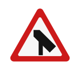
509.1Traffic merging onto the main carriagewayDrawn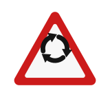
510RoundaboutDrawn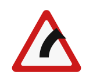
512Bend to right (or left if symbol reversed)Drawn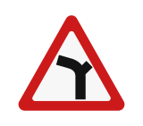
512.1Junction on the outside of a bend aheadDrawn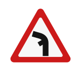
512.2Junction on the inside of a bend aheadDrawn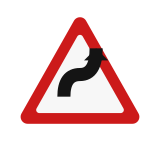
513Double bend first to left (symbol may be reversed)Drawn 513.1Adverse camber on a bend or roundaboutDrawn513.2Maximum speed advised at a bendDrawn
513.1Adverse camber on a bend or roundaboutDrawn513.2Maximum speed advised at a bendDrawn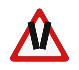
516Road narrows on both sidesDrawn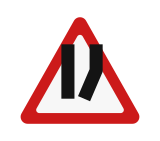
517Road narrows on right (left if symbol reversed)Drawn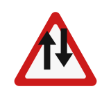
521Two-way traffic straight aheadDrawn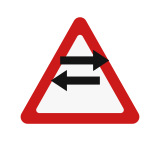
522Two-way traffic crosses one-way roadDrawn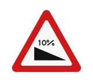
523.1Steep hill downwardsDrawn 524.1Steep hill upwardsDrawn
524.1Steep hill upwardsDrawn 526Opening or swing bridge ahead (pre-2016 number)Drawn
526Opening or swing bridge ahead (pre-2016 number)Drawn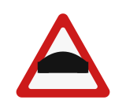
528Hump bridgeDrawn 529Opening or swing bridge aheadDrawn
529Opening or swing bridge aheadDrawn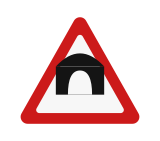
529.1Tunnel aheadDrawn 530Maximum headroom (pre-2016 number)Drawn530.1Reduced headroom under an overhanging structureDrawn
530Maximum headroom (pre-2016 number)Drawn530.1Reduced headroom under an overhanging structureDrawn 530AMaximum headroomDrawn
530AMaximum headroomDrawn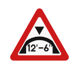
531.1Maximum headroom at an arch bridge (pre-2016 number)Drawn 531.1AMaximum headroom at an arch bridgeDrawn
531.1AMaximum headroom at an arch bridgeDrawn 531.2High vehicles use the middle of the road at an arch bridgeDrawn
531.2High vehicles use the middle of the road at an arch bridgeDrawn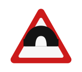
532.2Arch bridgeDrawn 532.3Available width at an arch bridgeDrawn
532.3Available width at an arch bridgeDrawn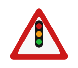
543Traffic signalsDrawn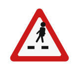
544Zebra crossingDrawn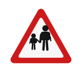
544.1Pedestrians in road aheadDrawn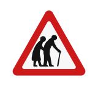
544.2Frail pedestrians likely to cross road aheadDrawn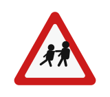
545Children going to or from schoolDrawn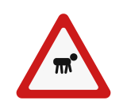
548CattleDrawn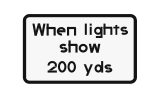
548.1Supervised cattle crossingDrawn549SheepDrawn550Wild horses or poniesDrawn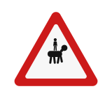
550.1Accompanied horses or poniesDrawn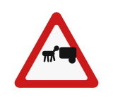
550.2Horse-drawn vehiclesDrawn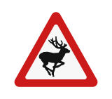
551Wild animalsDrawn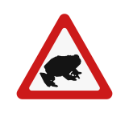
551.1Migratory toad crossingDrawn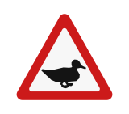
551.2Wild fowlDrawn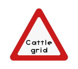
552Cattle gridDrawn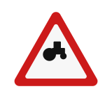
553.1Agricultural vehiclesDrawn553.2Agricultural vehicles likely to be in road aheadDrawn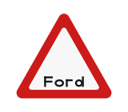
554FordDrawn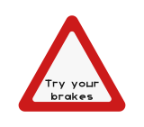
554.1Try your brakesDrawn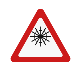
554.2Risk of iceDrawn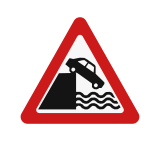
555Quayside or river bankDrawn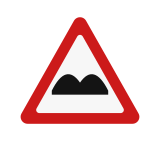
556Uneven roadDrawn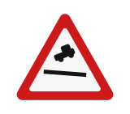
556.1Soft vergesDrawn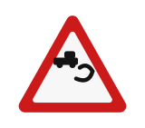
557Slippery roadDrawn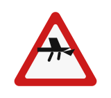
558Low-flying aircraft or sudden aircraft noiseDrawn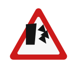
559Falling or fallen rocksDrawn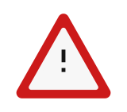
562Other danger; plate indicates nature of dangerDrawn 572Distance to hazardDrawn
572Distance to hazardDrawn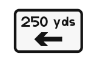
573Distance and direction to hazardDrawn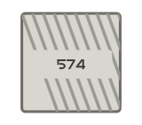
574Distance over which hazard extendsUnverified source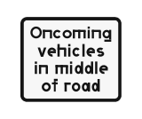
575Oncoming vehicles in the middle of the roadDrawn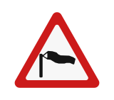
581Side windsDrawn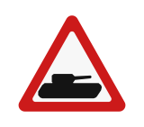
582Slow-moving military vehiclesDrawn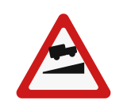
583Slow-moving vehicles on an inclineDrawn584Traffic queues likely aheadDrawn770Level crossing with barrier or gate aheadDrawn771Level crossing without barrier or gate aheadDrawn772Trams crossing aheadDrawn773Light signals ahead at a level crossing, airfield or bridgeDrawn774Level crossing without barrierDrawn775Keep the crossing clearDrawn776Another train or tramcar may be about to pass over the crossing. Level crossing ahead is crossed by more than one railway or tramway track, and more than one train or tramcar may pass over it in quick successionPlaceholder777Another train comingDrawn778Open level crossingDrawn779Overhead electric cableDrawn 780.1Safe height under electrified cables (metric)Unverified source780.2Safe height under electrified cables (imperial)Unverified source781Load gauge giving audible warning to drivers where vehicles exceed safe height under electrified overhead cablesPlaceholder782Risk of groundingDrawn
780.1Safe height under electrified cables (metric)Unverified source780.2Safe height under electrified cables (imperial)Unverified source781Load gauge giving audible warning to drivers where vehicles exceed safe height under electrified overhead cablesPlaceholder782Risk of groundingDrawn 783Long, low, large or slow vehicles must telephone before crossingDrawn
783Long, low, large or slow vehicles must telephone before crossingDrawn 784Level-crossing countdown — 2 stripesUnverified source785Level-crossing countdown — 1 stripeUnverified source
784Level-crossing countdown — 2 stripesUnverified source785Level-crossing countdown — 1 stripeUnverified source 786Waiting place for long or low vehiclesDrawn
786Waiting place for long or low vehiclesDrawn 787Telephone at a railway or tramway crossingDrawn788Direction to a crossing telephoneDrawn883Start of a traffic-calming areaDrawn884Quiet laneDrawn
787Telephone at a railway or tramway crossingDrawn788Direction to a crossing telephoneDrawn883Start of a traffic-calming areaDrawn884Quiet laneDrawn